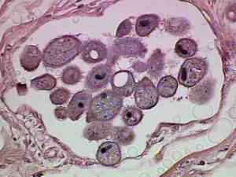

Stool
Did you know that...
Stool is the solid waste that is left after food is digested.
Stool forms in the intestines and passes out of the body through
the anus. The matter discharged at one movement of the bowels.
Also known as excrement, is a waste product from an animal's
digestive tract expelled through theanus or cloaca during a process
called defecation. Stool (feces) is most commonly brown in color,
and many people become curious or concerned when the color of their
stool changes. Most stool-to-stool changes in color have little meaning;
however, some changes, particularly if the changes are consistent from
stool-to-stool and not present in only one stool, can be important.
Kinds of stool
- lienteric stool feces containing much undigested food.
- rice-water s's the characteristic and diagnostic watery, light gray to clear diarrhea of CHOLERA, containing flecks of mucous material, epithelial cells, and many cholera vibrios.
- silver stool feces with a silver color due to a mixture of melena and white fatty stools; it occurs in tropical sprue and carcinoma of the ampulla of Vater, and in children taking sulfonamides who have diarrhea.

Additional Information
Poop Facts
The colon reserves what remains of food after digestion in the small intestine. Mass peristalsis thrusts the feces down to the rectum for evacuation. Then you poop it out!